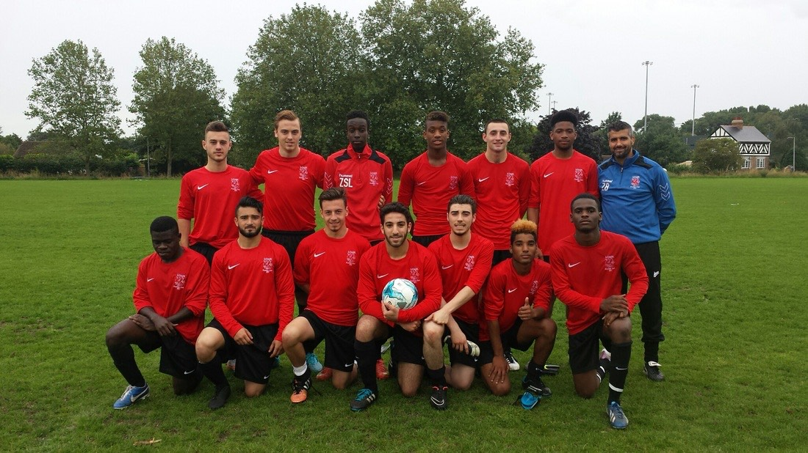
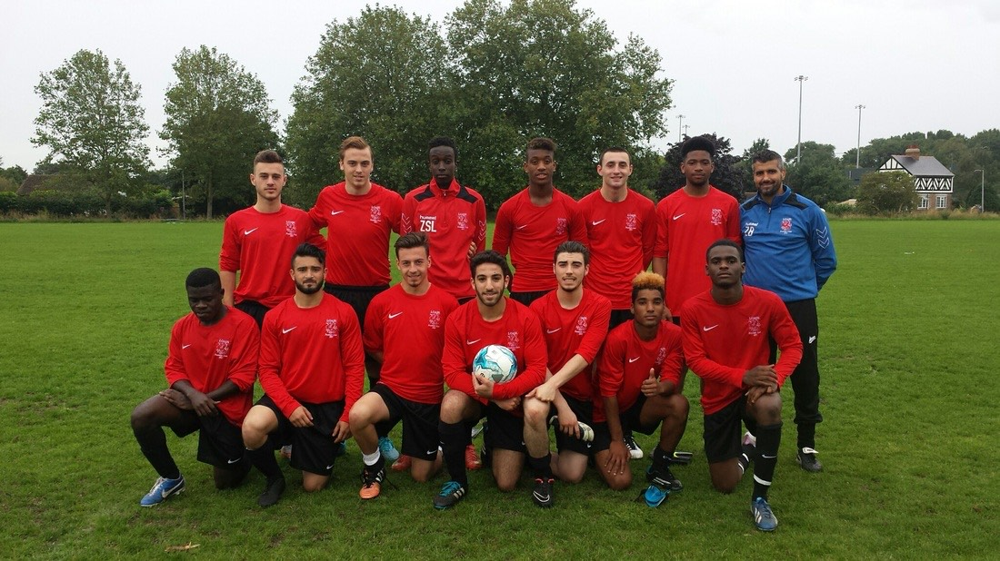

A little about me
Hi, I'm Hadi. I'm a very charismatic person who is very sociable and loves learning new things.
Rignt now, I'm currently undertaking a six week Software Engineering course. I see this as a great skill to learn as well as a brilliant career to embark in. I very much enjoy being able to express my creative side and being able to build things from scratch. I love problem solving and working with others who are like minded. For these reasons, my passion for software engineering has grown and I'm excited at even the prospect of me doing it as a career.
Born in east London in 1996, I’m a british and algerian citizen. Since a young age, I have always been very energetic and full of life. I enjoy most sports, mainly football. Despite my passion for sports; I’ve always wanted to do well in my studies. I have always been someone who loves to try new things and delve into something completely out of my comfort zone. I became passionate about being a programmer when I came across an opportunity with “whiteHat”. They were offering a free six week talent accelerator course which will then hopefully lead to a great apprenticeship opportunity. However; only 25 spaces were being offered for this course and there were over 200 applicants. After completing and passing the online competency and basic knowledge tests, I was invited to an interview. I began researching as much as I could about Software Engineering. I then discovered many online resources such as ‘FreeCodeCamp’, ‘CodeAcademy, ‘Mimo’ and a few others which I still use to this day. I’m very much enjoying this journey of becoming a ‘programmer’ and I really look forward to what the future holds. I plan to return to this site regularly and make updates and one day I will go through my GitHub commits to re-visit and reminisce on this wonderful(stressful) journey.
 

Relevant skills:
- Highly computer literate with an advanced knowledge and use of all Microsoft Office packages
- Competent database management include CRM systems and basic essential knowledge using Sage Line 50
- Exceptional written and verbal communication skills, time management and able to work independently and use own initiative
- Ability to prioritize and manage time effectively under pressure
- Excellent at team-working and managing conflicting priorities
Right